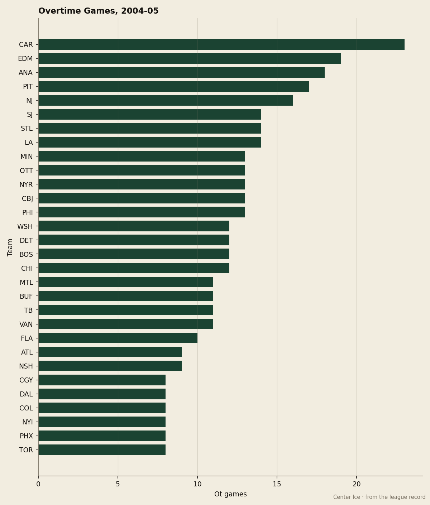

The Point Builder: Carolina has played overtime 23 times, 45.9 percent of its points came from those games, and the goal differential is minus-1
The Hurricanes are 5th in the East on a construction no other club in hockey matches, and the arithmetic says it is a coin-flip roster wearing a playoff sweater
 Howard BlaineSenior writer, The Blaine Rankings · The Hockey Gazette
Howard BlaineSenior writer, The Blaine Rankings · The Hockey Gazette
 Carolina Hurricanes has 74 points and a minus-1 goal differential. The club has played 62 games, 23 of them to overtime, four more than any other team in the league. Of the 74 points on the board, 34 arrived in those 23 games, a share of 45.9 percent that leads hockey, with Pittsburgh at 44.8.
Carolina Hurricanes has 74 points and a minus-1 goal differential. The club has played 62 games, 23 of them to overtime, four more than any other team in the league. Of the 74 points on the board, 34 arrived in those 23 games, a share of 45.9 percent that leads hockey, with Pittsburgh at 44.8.
The standing says 5th in the East, 13 points clear of the bubble, 3 points behind Washington for 4th. The goal differential says a .500 club. The reconciling number is overtime: 11 wins and 12 losses in extra time, each one worth at least a point, with the wins and losses splitting the extra periods nearly in half.

Two men carry that construction.  Kevin Weekes88 has started 51 games, allowed 3.01 a night on 0.857 saves, and sits 87 on the Book. It is a number that keeps the club one goal from a tie at the end of sixty minutes more often than most clubs can manage, and the 12 overtime losses prove it happens often enough to matter. In front of him,
Kevin Weekes88 has started 51 games, allowed 3.01 a night on 0.857 saves, and sits 87 on the Book. It is a number that keeps the club one goal from a tie at the end of sixty minutes more often than most clubs can manage, and the 12 overtime losses prove it happens often enough to matter. In front of him,  Jeff O'Neill88 has 83 points in 54 games, a pace of 126, and
Jeff O'Neill88 has 83 points in 54 games, a pace of 126, and  Radim Vrbata78 has 53 in 38. The scoring is sufficient to pull a game level. It has not been sufficient to pull one ahead with regularity: 221 goals for, 222 against, over 62 nights.
Radim Vrbata78 has 53 in 38. The scoring is sufficient to pull a game level. It has not been sufficient to pull one ahead with regularity: 221 goals for, 222 against, over 62 nights.
What the overtime share means at the quarter-mark
No other club in hockey derives more than 45 percent of its point total from extra time. The bottom of the table, where the safe clubs live, tells the opposite story.  Toronto Maple Leafs has played 8 overtime games all season, the fewest in the league, and derives 12.2 percent of its 98 points from them.
Toronto Maple Leafs has played 8 overtime games all season, the fewest in the league, and derives 12.2 percent of its 98 points from them.  Dallas Stars has played 8, the same as Toronto, and sits on 17.5 percent of 80. The two Presidents' Trophy candidates and the Stanley Cup champion all avoid the extra period entirely, which is what you do when your goal differential is plus-151 or plus-37.
Dallas Stars has played 8, the same as Toronto, and sits on 17.5 percent of 80. The two Presidents' Trophy candidates and the Stanley Cup champion all avoid the extra period entirely, which is what you do when your goal differential is plus-151 or plus-37.
Carolina is the opposite. The Hurricanes drag 37.1 percent of their games to overtime, the highest rate in the league, and then win just under half of them. Over the full 82, the expected OT win total would be about 14 or 15, which would put the final point count somewhere near 80, the number that gets you in. That is also a number that depends on a series of coin flips breaking correctly across 30-plus extra periods, and a team that is minus-1 in regulation-plus-overtime goal differential has no structural reason to expect those flips to go its way in April.
The division tells the same story
Inside the Southeast, Carolina is 6-3-5 in the season series, with 3 overtime wins already booked. The club is 2-2 against Washington, 1-1-2 against Tampa Bay, and 2-1-1 against Atlanta. Against the Atlantic and Northeast, the Hurricanes have not yet been tested in a way that exposes the gap between their record and their goal differential, because most of those meetings land in the back half of the schedule.
 Mighty Ducks of Anaheim arrives Tuesday, a club that has played 18 overtime games itself and sits 6th in the West on 75 points with the same kind of construction. Then comes
Mighty Ducks of Anaheim arrives Tuesday, a club that has played 18 overtime games itself and sits 6th in the West on 75 points with the same kind of construction. Then comes  Phoenix Coyotes on February 26, a 25-27-6 club that has played 8 overtime games and draws 60 points from 48 goals for. Both clubs are built to grind, and Carolina will need Weekes to keep them in it one more time.
Phoenix Coyotes on February 26, a 25-27-6 club that has played 8 overtime games and draws 60 points from 48 goals for. Both clubs are built to grind, and Carolina will need Weekes to keep them in it one more time.
The bet this desk will log
The Hurricanes have 20 games remaining. At their current overtime rate of 37.1 percent, they will play approximately 7 more extra periods before the season ends. At 11 wins in 23 tries, the expected return is 3 wins. The desk predicts Carolina wins fewer than 5 of its remaining overtime games, which would leave the final OT win total between 14 and 15 and the final point count between 78 and 82. That range is enough to hold 5th. It is also the range where a two-game losing streak in extra time drops the club behind Boston and into the bubble this desk has been tracking all February.
The standings at Christmas are the standings in April, this paper has said, when the teams holding those positions earn them with goal differential. Carolina earns them with overtime. That difference shows in every number above the point total, and in none of the ones that count for seeding.